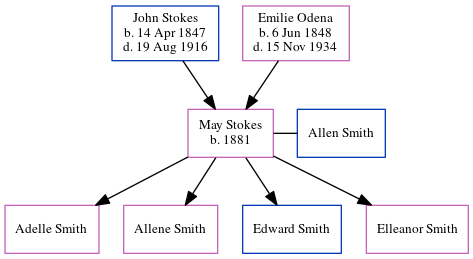

May Smith (née Stokes) 1881 -
[ Home ] | [ Calendar ] | [ Surnames Index ] | [ Census Index ] | [ Family History ]The child of John Stokes (a virginia philips told me that he owned a big grocery store and later a vinegar works. his last business was stokes marble company) and Emilie Odena, May Stokes, the great-great-aunt of Michele Copp (née Phillips), was born in Georgia in 18811,2 and married Allen Smith (with whom she had 4 children: Adelle, Allene, Edward and Elleanor) on Jun 21, 1905.
During her life, she was living in Black Hall, Fulton, Georgia in 19001; and in Atlanta Ward 7, Fulton, Georgia in 19202.
Parents
- John Wesley was born on Apr 14, 1847
- Emilie Mae was born on Jun 6, 1848
Citations
- 1900 United States Federal Census Online publication - Provo, UT, USA: MyFamily.com, Inc., 2004.Original data - United States of America, Bureau of the Census. Twelfth Census of the United States, 1900. Washington, D.C.: National Archives and Records Administration, 1900. T623, 1854 rolls.
- 1920 United States Federal Census Online publication - Provo, UT, USA: MyFamily.com, Inc., 2005. For details on the contents of the film numbers, visit the following NARA web page: NARA. Note: Enumeration Districts 819-839 on roll 323 (Chicago City.Original data - United States of America
Family Tree
Generated by ged2site. Last updated on Jun 6, 2024